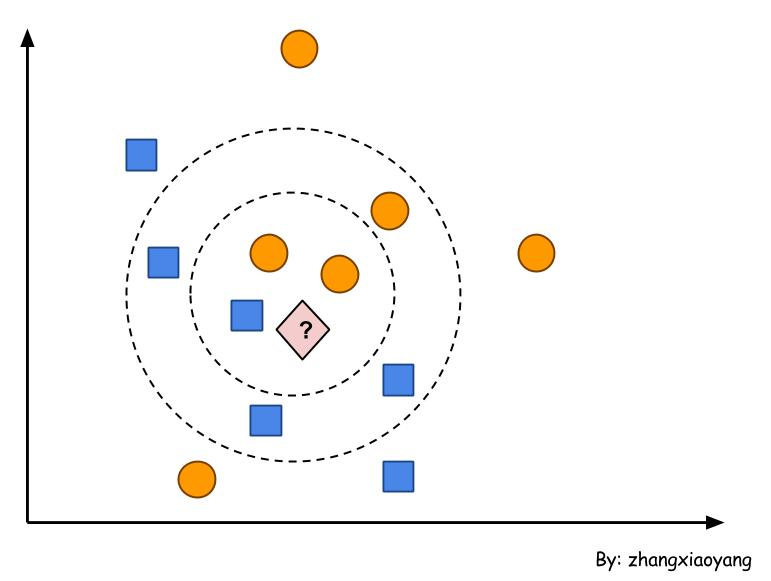
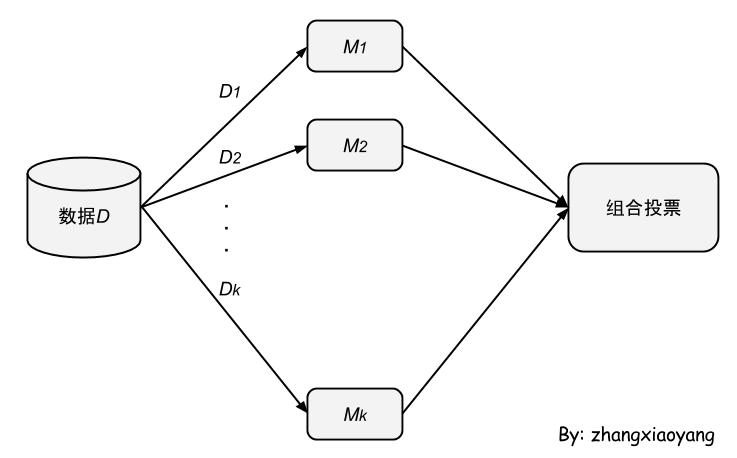
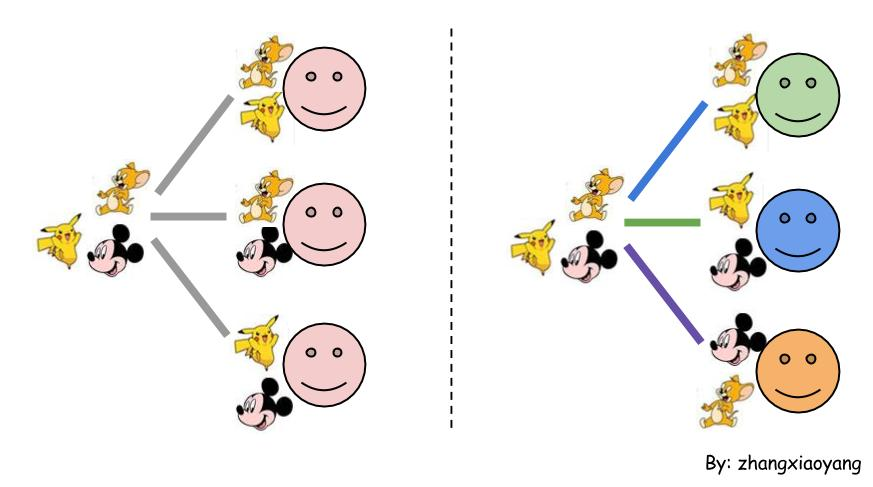

数据挖掘入门(5-4)
决策树、朴素贝叶斯、神经网络好生麻烦，这节来感受一个超超超简单的算法，依然是分类算法——KNN。
KNN（K Nearest Neighbor）
基础拾遗
知道一个算法叫做K-means，和KNN有关系吗？疑惑良久，经过各种看书和搜索，发现他们是清白的，真心没关系。
男一号：K-means，一种聚类算法，无监督
女一号：KNN，一种分类算法，有监督
什么是“有监督”，什么是“无监督”？
前面说的分类算法有一个共同的特点，都需要使用训练集进行学习，学成之后才可以用于分类，这样的算法就是有监督算法。
还有一类算法，不需要进行学习，直接上手进行分类。
其实，这里面蕴含了两种学习思想。有一个家庭，父亲很严厉的管教子女，小到几点睡觉，大到何时结婚，都定下了一系列要求，子女必须按照这个要求来。还有一个家庭，父亲一直教育子女要诚实守信、踏实做人，子女在成长的过程中一直记得父亲的教诲。第一个家庭使用的就是有监督算法，一板一眼，是对是错都描述好了。第二个家庭使用的是无监督算法，只是在算法设计的时候把核心价值观告诉你，以后怎么做人你自己体会吧。
还有一个问题，什么是分类，什么是聚类？
它们最大的区别的，对于分类，我们已经知道当前有哪几个类了，只需要把待分类的划分到指定类就好了。聚类则不知道有多少个类，经过聚类产生相应的类。
KNN
下面回到KNN算法，千言万语不如一个图来的直观，如下图。

假设橘黄色的圆形代表“高富帅”类，蓝色的正方形代表“非高富帅”类。我们提取一些属性特征进行向量化，如高度作为x轴，收入作为y轴。于是，我们可以在坐标系中画出很多圆圈和正方形。
现在，来了一个小伙，我们不知道他是不是高富帅。于是，我们提取他的属性特征，并在坐标系中确定他的位置，图中的菱形问好位置。
现在使用KNN把这个小伙划分到指定的类。KNN算法又叫做最近邻居法，意思是说根据与之相邻的最近的k个邻居确定把当前元素划分到哪一类。
如果我们使用3-NN进行分类，菱形最近的三个邻居中有两个是圆形（高富帅），一个是正方形（非高富帅）。经过“投票表决”，当前的元素应该划分到“高富帅”类。就是少数服从多数的意思。
如果我们使用5-NN，则把当前的元素划分到“非高富帅”类。
所以，不同的k取值，可能会导致不同的分类结果。所以，k值的选择很重要。
KNN算法的使用须知：
- 分类结果和训练集数量有关，所以尽量让不同类的训练集数量相当。
- 所谓的距离可以使用欧式距离，也可以使用余弦距离，这个看情况吧
- 如何提取特征属性作为训练集，这是是一个问题（比如上面的例子，如何处理“帅”这个属性呢？所以属性要选好，并且还有用好。这个问题不仅仅是KNN要面临的问题）。
- 属性值的贡献度未必是相同的，所以，可能需要赋予不同属性不同的权值。0
- k值如何选取呢？可以通过一些启发式技术（经验）获得，如交叉验证。
组合分类器（Ensemble Methods）
决策树、朴素贝叶斯、神经网络、KNN，看了好多分类算法啊！
记得逍哥说过一句很经典的话：
算法没有哪个好哪个不好，只是使用情况不同。
所以，这些分类算法应该是各有亮点吧！其实，我们关心的不是用哪个算法，而是想得到更好的分类结果。
如何提高分类的准确率？
其中一种方法就是使用组合分类方法，顾名思义，使用多个分类器构成一个大的分类器，如下图。而这样得到的结果往往比单个分类器更准确。

大致的流程就是训练集分成k份，每一份输入到一个分类器（基分类器）进行学习。各个分类器对于学到的知识的理解可能不同，所以，当输入待分类数据的时候，不同的基分类器所得出的分类结果可能不同。所以，需要进行一次组合投票，即汇总各个基分类器的分类结果，然后投票表决（少数服从多数）。
我们知道组合分类方法有助于提高分类的准确率。但是如何组合来得到一个大的分类器呢？总不能瞎组合吧。
所以，就有了装袋（Bagging，Bootstrap Aggregating的缩写）、提升（boosting）等组合分类器的方法。
装袋方法和提升方法的主要思想可以用下图说明。（左侧表示装袋，右侧表示提升。）

训练集中有三只老鼠，刚好有三类，分别是皮卡丘、Jerry、米奇。不同颜色的笑脸代表使用不同算法的分类器。线条的颜色代表抽选样本的方法。
如果使用装袋方法，则随机选择样本输入到分类器。注意，三个分类器使用的算法相同，所以笑脸颜色相同，每次抽样都是随机的，即抽样方法相同，所以用灰色线表示，可以知道，输入到某个分类器的样本可能和其它某个分类器的样本有交集。经过学习，最上面的分类器可以识别Jerry和皮卡丘，中间的分类器可以识别Jerry和米奇，最下面的分类器可以识别皮卡丘和米奇。
如果有一天把具有米奇特征的东西输入到使用装袋方法的组合分类器，中间和最下面的分类器会说“这是米奇”，而最上面的分类器可能会识别错误，说“这是Jerry”。经过投票表决，把这只老鼠归类到“米奇”类。
如果使用提升方法，则根据权重选择样本输入到分类器，所以三条线的颜色不一。同时，要求三个分类器使用不同的算法，所以笑脸的颜色也不一样。所谓的“权重”，其实是根据错误率确定的。比如，对于某一个输入，第一个分类器不能够很好的进行分类，则会计算出较高的错误率，即权重会很高。第二个分类器在选择样本的时候会优先选择前面的分类器不能很好分类的样本。因为这种思想，所以这种组合分类的方法叫做“提升”。就是说，很多事情，如果某件事第一个人做不好，第二个人就要继续把这个事情做好，如果第二个人也做不好，第三个人就要把这个事情做好。评价“好”的指标就是错误率，错误率越低，权重越低，也就越好，越不太可能被后者重复做。
如果有一天把具有米奇特征的东西输入到使用提升方法的组合分类器，每个内部的分类器都会得到一个结果，但是这个结果不像装袋方法那样具有同样的影响。提升方法会把各个结果赋予权重。
-- EOF --